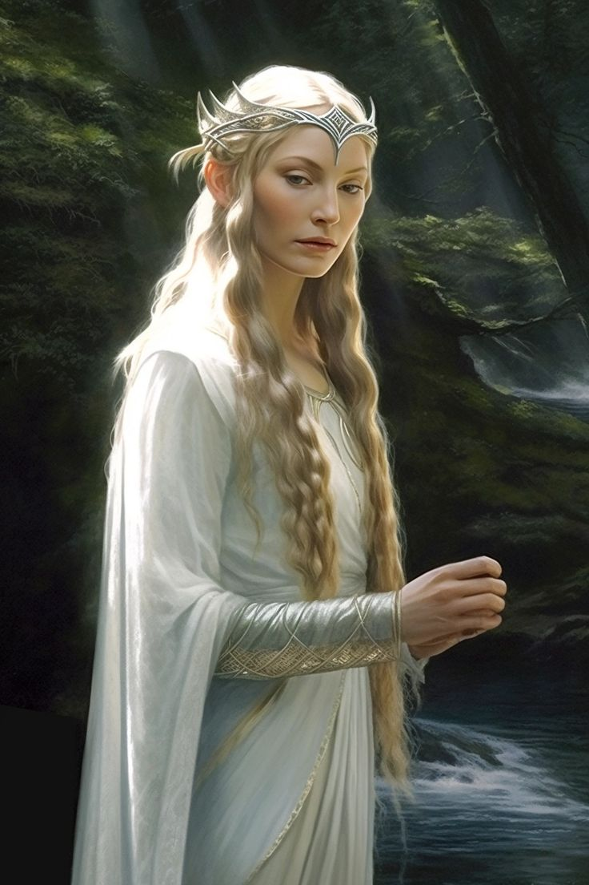
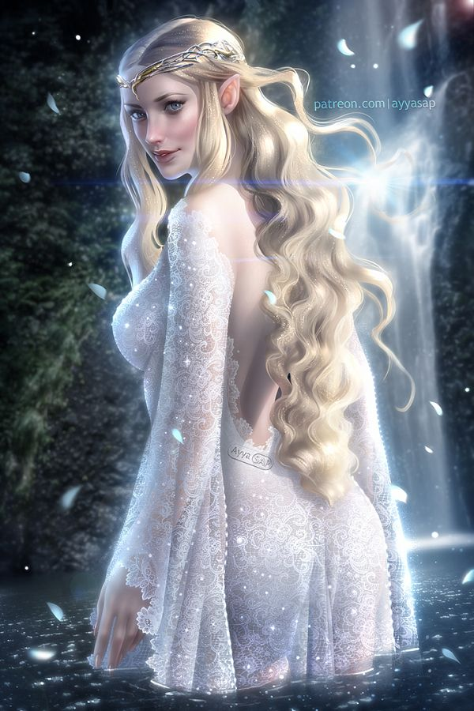

Voz que ressoa além do tempo. Guardiã da luz em meio às sombras. 🌌
Galadriel nasceu em Aman, filha de Finarfin e Eärwen. Neta de Finwë, ela pertence à linhagem nobre dos Noldor. Desde jovem, demonstrava grande sabedoria, força de vontade e um espírito inquieto — desejava conhecer e moldar o mundo além das Terras Imortais.
Durante a revolta liderada por Fëanor contra os Valar, Galadriel escolheu partir para a Terra Média. Embora não tenha participado dos atos violentos, sua decisão de cruzar o Helcaraxë — o mar de gelo — marcou sua coragem e determinação.
Na Terra Média, Galadriel percorreu diversas regiões: Doriath, Nargothrond, e finalmente Lothlórien. Em cada lugar, deixou marcas de sabedoria e poder. Casou-se com Celeborn, e juntos governaram Lothlórien com graça e firmeza.
Seu domínio é refúgio aos que resistem à sombra. Lá, até o tempo hesita, e os corações encontram paz.
“Mesmo nas trevas, há uma luz que não falha.” — Galadriel
Galadriel foi guardiã de Nenya, o Anel da Água, forjado por Celebrimbor. Com ele, preservava a beleza e a paz de Lothlórien, resistindo à influência de Sauron. Seu poder era imenso, mas sempre usado com sabedoria.
Um artefato místico que revelava visões do passado, presente e futuro. Frodo e Sam contemplaram nele os perigos que se aproximavam. Galadriel ofereceu a Frodo a escolha — e ele resistiu à tentação do Um Anel.
Após a derrota de Sauron, Galadriel embarcou rumo a Valinor, encerrando sua jornada na Terra Média. Sua partida marcou o fim da Terceira Era e o início de uma nova era para os povos livres.


Ela era como uma estrela entre as sombras, uma luz que jamais se apagava. Mesmo quando partiu, sua memória permaneceu — como folhas douradas que dançam no vento da lembrança.